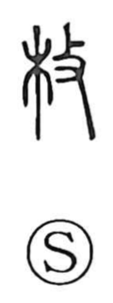

枚

Uncategorized
Kun: | On: mai
counter for flat objects ・ thin flat piece ・ sheet
Explanation
A compound graph formed from 木, “wood,” and 攴, the sign for “to strike.” It evokes striking or chopping wood with an ax or similar tool to break it into thin, flat pieces—board-scraps and slivers. From this image of a small piece of board and things that are flat or thin, the character came to denote a thin flat piece, and by extension serves as the counter for flat objects.